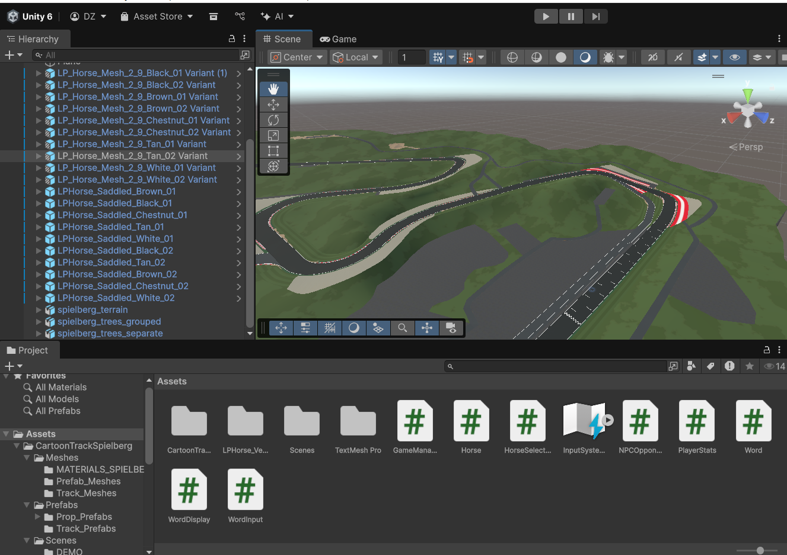

Project 1: Purple Dino Fruit Frenzy Arcade Game (Pico-8, Lua)
Created a retro-inspired arcade game with sprite designing, collision detection, random fruit spawning, scoring systems, sound effects, timed gameplay, and a top-3 high score leaderboard, showcasing both game design and programming skills.
[ In Progress ] Project 2: Desirae's Ransack Racetrack Typing Game (Unity, C#)
Developing an educational typing-based racing game in Unity with character selection, dynamic word spawning, and competitive gameplay.
Implemented core systems in C#, including:
GameManager.cs – controls game flow, scoring, and timers.
Horse.cs / HorseSelectionManager.cs – allows players to select a racer and manages character movement tied to typing accuracy.
NPCOpponent.cs – creates AI-controlled NPC racers to compete against players.
Word.cs / WordInput.cs / WordDisplay.cs – handles random word generation, user input detection, and real-time visual feedback.
PlayerStats.cs – tracks player performance, accuracy, and progress across races.
